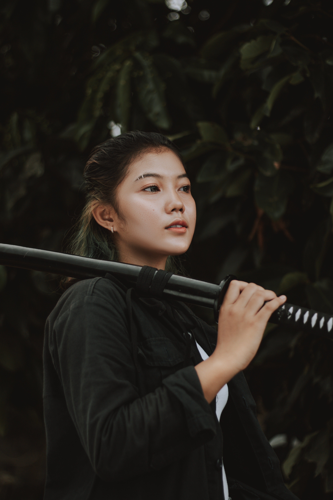

A ESPADA KATANA
Catana[2] (katana (刀?)) é uma tradicional espada japonesa (日本刀 nihontō?)[3][4][5] que foi usada pelos samurais do Japão antigo e feudal.[6] A catana é caracterizado por sua aparência distintiva: uma lâmina curva, de um único fio com um protetor circular ou esquadrado e um cabo longo para acomodar duas mãos.
No entanto, esta palavra foi incorporada na língua portuguesa no século XVI, após a chegada dos portugueses ao Japão. Por essa razão, nestes quase quinhentos anos, essa palavra foi perdendo a sua pronúncia japonesa aportuguesando-se e ganhou novos sentidos em português, especialmente nas variantes europeia, africana e asiática, designando uma variedade de objectos como espadas, sabres ou facões.[7][8][9] Com o renovar do interesse pela cultura nipónica nos vários países de língua portuguesa, nos últimos anos, a palavra catana reforçou o seu sentido original. Surgida no Período Muromachi, era a arma padrão dos samurais e uma das suas variantes, a wakizashi, era usada pelos ninjas.
UMA ARMA ANTIGA
Surgida no Período Muromachi, era a arma padrão dos samurais e uma das suas variantes, a wakizashi, era usada pelos ninjas. É utilizada para a prática do kenjutsu, a arte de manejar a espada. Tem gume apenas de um lado, e sua lâmina é ligeiramente curva.
OS SAMURAIS
Classe guerreira do Japão ou os membros desta classe. Os samurais apareceram como administradores das províncias que representavam os cortesãos ricos residentes na capital Kyoto. Formaram uma casta privilegiada até 1871, quando todo o sistema feudal foi abolido.
Os samurais, que formavam uma classe social, serviam aos clãs poderosos chamados daimios e a senhores militares ou xoguns, que governaram o Japão do século XII até 1867. Os samurais orientavam-se por um estrito código chamado bushido ("a conduta do guerreiro"), que unia o ideal de lealdade e o de sacrifício.
A ESPADA E AS PRÁTICAS MILITARES
A espada era o símbolo máximo dos samurais. Estes se preparavam desde a infância, recebendo treinamentos dos mestres mais experientes. Nos séculos XV e XVI, muitos samurais utilizaram as experiências militares e as qualidades adquiridas para se dedicarem à administração de negócios nas áreas de comércio e agricultura.
FABRICAÇÃO
A espada de um samurai representava muito mais do que uma simples arma: era um item espiritual e um símbolo de poder. É com esse senso de sacralidade que os Komiya fazem espadas de samurai desde 1786 no Japão. Essa família é uma das últimas a empregar até hoje as técnicas tradicionais na fabricação desses objetos, passadas de geração em geração. Cada espada pode levar vários meses para ser feita - inteiramente à mão - e custa até US$ 2,5 mil (R$ 8 mil). Saiba a seguir como se dá esse processo.
É utilizada para a prática do kenjutsu, a arte de manejar a espada. Tem gume apenas de um lado, e sua lâmina é ligeiramente curva.[10] Era usada tradicionalmente pelos samurais, acompanhada da wakizashi (脇差). A catana era usado em campo aberto, enquanto a wakizashi servia para combate no interior de edifícios.